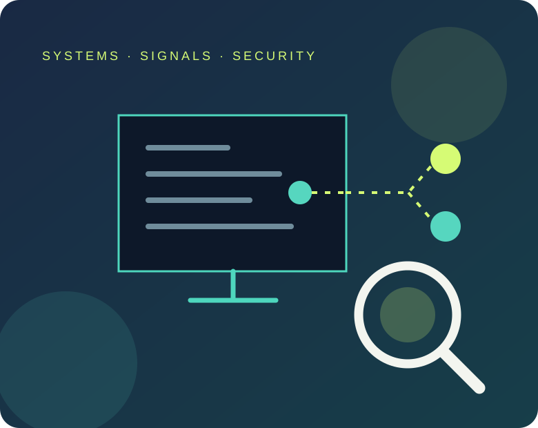

What keeps me learning
Technical interests.
The areas of security I’m exploring and the questions that keep me curious.
01 · Cyber security
Cyber security
I’m interested in how computer systems can be protected and how security decisions affect the people who rely on them. My degree gives me a foundation in computer science, and I want to develop a practical understanding of how security concepts apply to real systems.
I’m keen to learn how to identify weaknesses, understand their impact, and communicate ways to reduce risk. I’ll add examples from my coursework and projects as I complete work I can share.

Connected systems
Computer networks
I’m interested in how devices communicate and how network design supports reliable and secure services. I want to understand how protocols, network components, and security controls fit together.
As I progress through my course, I’m building a clearer picture of how networks are configured, where risks can arise, and how security measures help protect data and services.
See the work in context